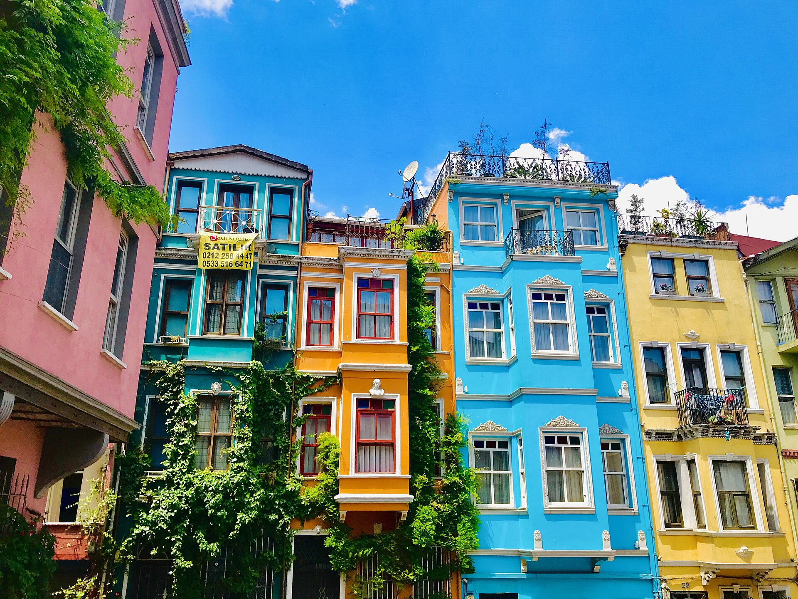
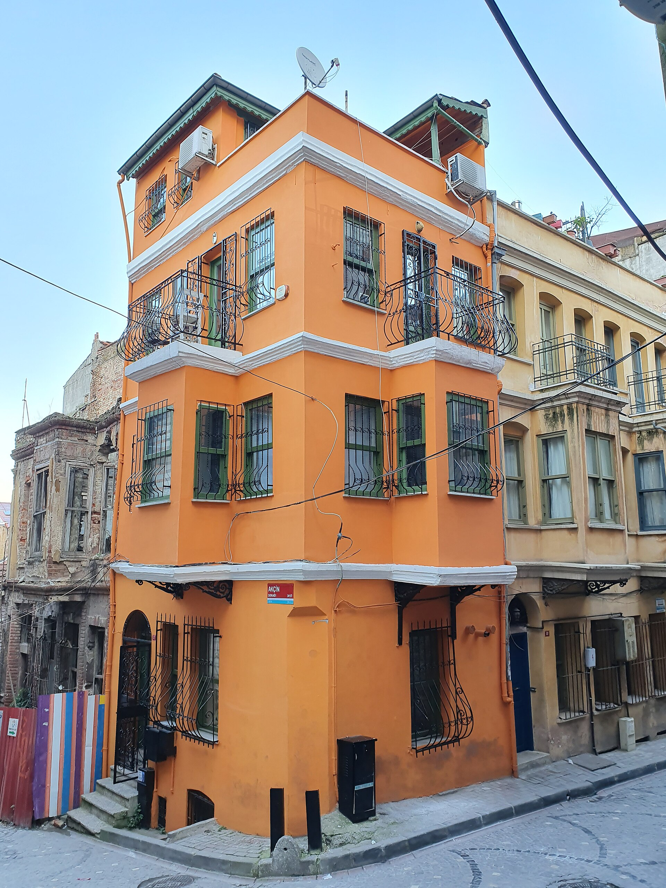
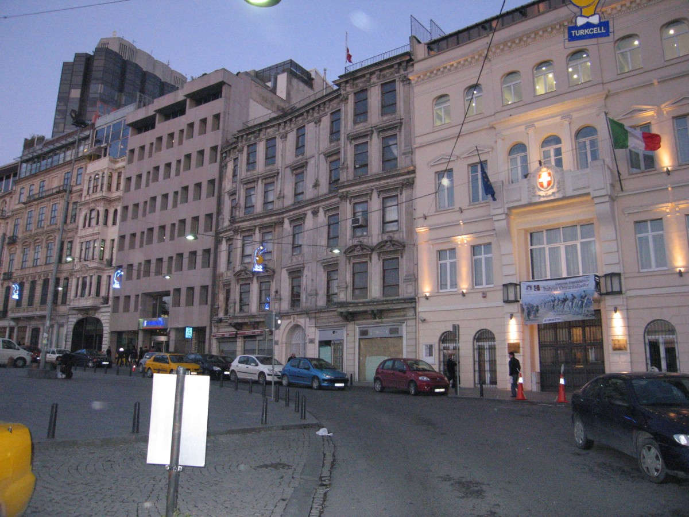
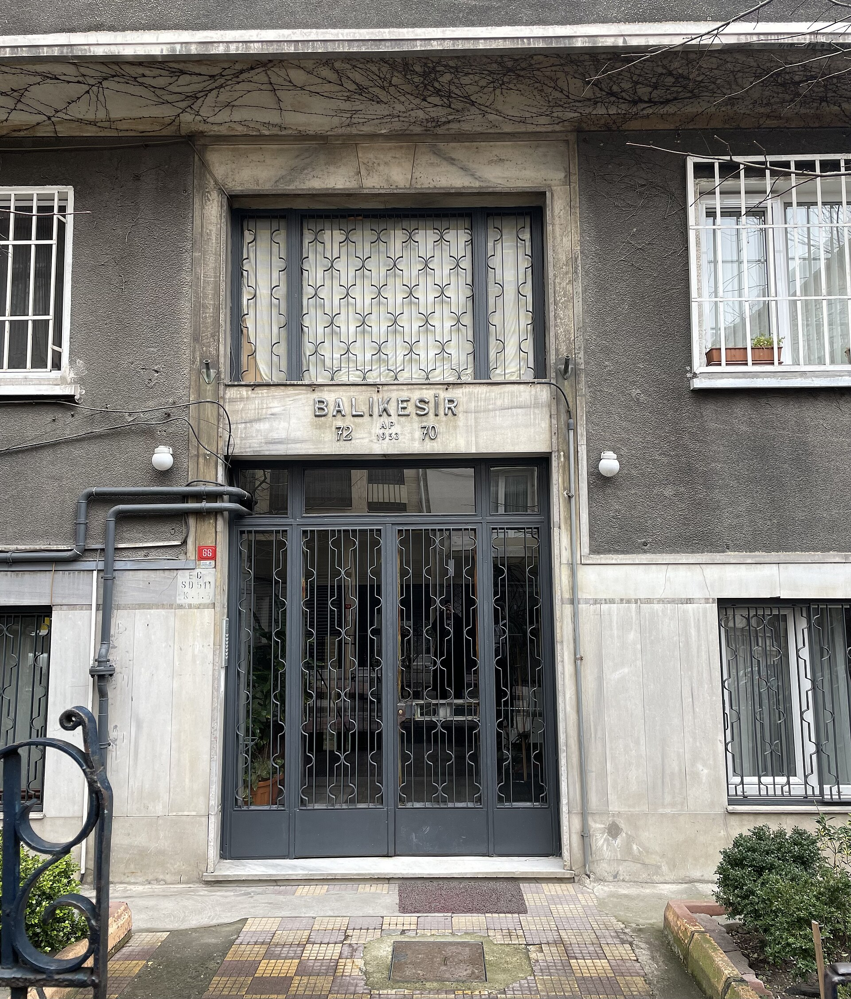
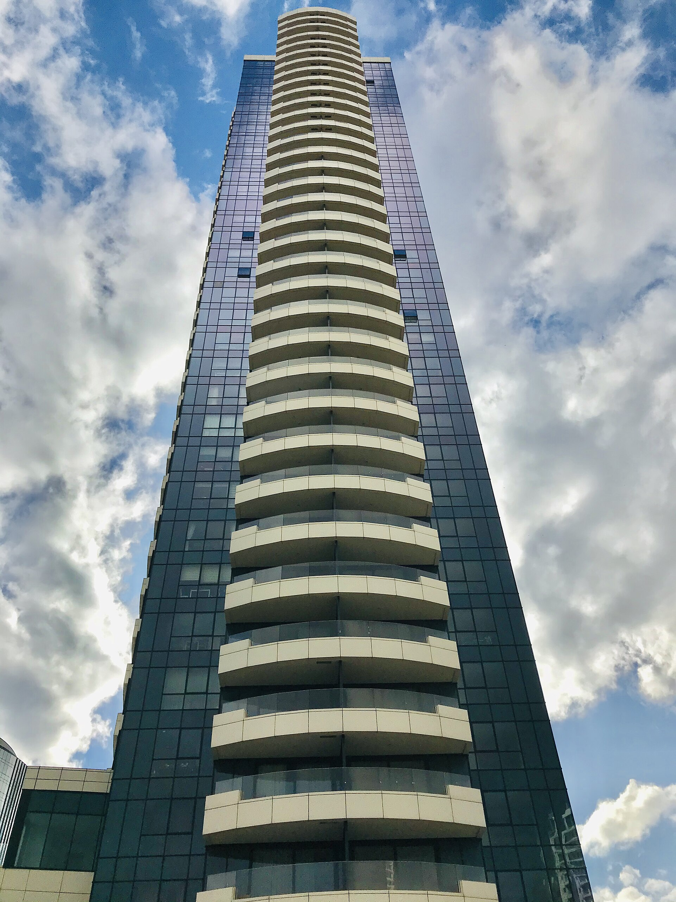

Örnek Kıyı · Satılık
İki odalı örnek daire
2 oda · 78 m² · Örnek bina
Örnek fiyat: 4.800.000 TL
Örnek ilan. Alan ve fiyat gerçek portföy bilgisi değildir.
Bölge ve ilan bilgileri örnektir.
Gerçek ofis içeriğiyle değiştirilmelidir.
Bu demo paftadaki mahalle adları örnektir. Gerçek hizmet bölgeleri ofis tarafından eklenmelidir.
Balat cephelerinden Kartal konutlarına, yapı dokusu atlasın ilk okuma katmanıdır.





Üç kayıt da örnek veridir; fiyat, alan ve oda bilgileri gerçek ilan değildir.
JavaScript kapalı: tüm örnek ilanlar aşağıda listelenir.
Örnek Kıyı · Satılık
2 oda · 78 m² · Örnek bina
Örnek fiyat: 4.800.000 TL
Örnek ilan. Alan ve fiyat gerçek portföy bilgisi değildir.
Örnek Çarşı · Kiralık
3 oda · 112 m² · Örnek bina
Örnek kira: 28.000 TL / ay
Örnek ilan. Alan ve kira gerçek portföy bilgisi değildir.
Örnek Bahçe · Satılık
4 oda · 146 m² · Örnek yapı
Örnek fiyat: 7.250.000 TL
Örnek ilan. Alan ve fiyat gerçek portföy bilgisi değildir.
Bu seçimde örnek ilan yok. Başka bir mahalle veya ilan türü seçin.
Mahalle sınırları, çalışma alanı, danışman bilgisi ve portföy bu örnek sayfada doğrulanmış değil. Yayından önce ofisin gerçek içerikleriyle değiştirilmelidir.
Ofis adresi ve iletişim bilgileri eklenecek.